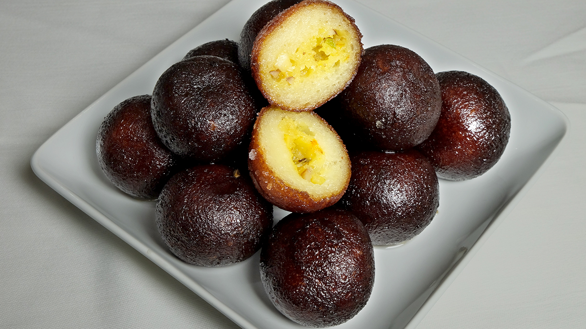

| Home → Recipe List |
Kala Jamun
|
By Hebbars Kitchen/h3>
- Serve : 15 Jamuns
- Time : 1 Hour
|
|
Kala Jamun is a type of jamun, a milk-solid-based sweet from the Indian subcontinent.
|
|

|
|
| |
| |
Ingredients |
| |
For Mawa :
-
1 Tbsp
Ghee / Clarified Butter
-
1/2 Cup
Milk
-
1/4 Cup
Thickened Cream (Optional)
-
1 Cup
Milk Powder
For Sugar Syrup :
-
1 Cup
Sugar
-
1 Cup
Water
-
3
Cardamom(Powdered)
-
1 Tbsp
Lemon juice
For Kala Jamun :
-
1/2 Cup
Paneer (Crumbled)
-
1 Cup
Mawa
-
1/4 Cup
Maida
-
A Pinch
of Baking Soda
-
1-2 Tbsp
Water / Milk (As Required)
-
Oil for Deep Frying
For Stuffing :
-
2 Tbsp
Almonds (Chopped)
-
2 Tbsp
Cashews(Chopped)
-
1 Tbsp
Saffron Water
|
|
|
Preparation
- firstly, in a large mixing bowl take crumbled paneer.
- mash the paneer till it forms a smooth dough.
- mash till the paneer forms a smooth dough without any paneer particles.
- now add prepared khoya and mash well.
- furthermore, add maida and combine with paneer mawa mixture.
- add a pinch of baking soda and water or milk if required to get moisture.
- mix gently to form a smooth dough.
- also prepare stuffing by mixing dry fruits and saffron water, colour with prepared dough. make balls.
- firstly, take a small ball sized dough and make ball.
- and place the prepared dry fruit ball in centre.
- cover and seal the ball.
- heat the ghee on low flame and when the ghee is moderately hot, fry the jamuns.
- fry till the balls turns black.
- immediately, drop the hot kala jamuns into hot sugar syrup.
- cover the lid and rest for 2 hours.
- finally, serve kala jamuns when doubled in size.
|
|
|
| |
| |
| Home → Recipe List |
|